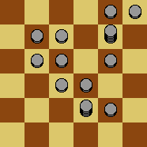
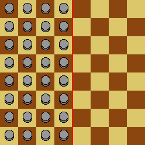
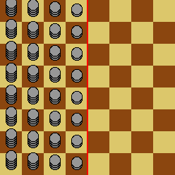

Peter is playing a solitaire game on an infinite checkerboard, each square of which can hold an unlimited number of tokens.
Each move of the game consists of the following steps:

The board is marked with a line called the dividing line. Initially, every square to the left of the dividing line contains a token, and every square to the right of the dividing line is empty:

Peter's goal is to get a token as far as possible to the right in a finite number of moves. However, he quickly finds out that, even with his infinite supply of tokens, he cannot move a token more than four squares beyond the dividing line.
Peter then considers starting configurations with larger supplies of tokens: each square in the $d$th column to the left of the dividing line starts with $d^n$ tokens instead of $1$. This is illustrated below for $n=1$:

Let $F(n)$ be the maximum number of squares Peter can move a token beyond the dividing line. For example, $F(0)=4$. You are also given that $F(1)=6$, $F(2)=9$, $F(3)=13$, $F(11)=58$ and $F(123)=1173$.
Find $F(1234567)$.
solve(n=0) → ?solve(n=1234567) → ?solve(n=10000000) → ?